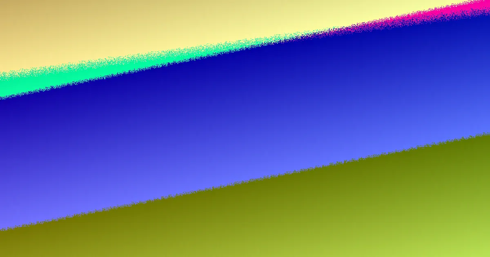

An Adelaide earthmoving quote is only as reliable as the decisions behind it. A useful price names the physical outcome, the route from street to work face, known services, ground assumptions, spoil handling and the final site condition. Simply Earthworks material names six scope families: earth works, excavation, site cuts and levelling, trenching and drainage, soil and spoil removal, and tight access work. Availability, timing and acceptance are not settled by sending details; a provider still inspects or confirms scope, terms and price.
For local buyers, earthmoving adelaide quotes explained so treat the paperwork as a set of answers, not a guess.
Earthmoving Adelaide Quotes Explained Explained
Most disagreement starts when a machine task is described like a boxed product. In practice, the figure rests on choices: what the ground must become, how plant reaches the work, what is already known about pipes and cables, what the soil may do, where excavated material goes, and how the site is left for the next step. Read Earthmoving Adelaide Myths: 2026 Guide as the companion view, while this page stays with the quote itself.
A strong quote turns those choices into written scope. It should say whether the job is broad shaping, cut to dimension, formation to levels, a narrow line for drainage, cartage of material, or a constrained access problem. If those ideas blur together, plant category, attachments, mobilisation, ground assumptions, material handling, completion profile and variation triggers stay unresolved.
The six scope families in plain language
Earth works shape and prepare land around agreed levels, falls and cut or fill assumptions. Excavation removes ground to nominated dimensions or depth. Site cuts and levelling set levels, falls and formation for building, landscaping or access. Trenching and drainage form narrow routes to nominated lines and grades for the relevant licensed trade.
Soil and spoil removal depends on stated material, cartage and lawful receiving assumptions. Tight access work is not merely a smaller standard job; it is planning around measured openings, turns, overhead limits and constrained spoil transfer. A price that ignores the difference can look cheaper while leaving the hard part outside the scope.
Access, services and ground unknowns
Measure more than the front opening. Record the narrowest point on the whole path, turns, steps, slopes, eaves, surfaces, loading space and features that must remain intact. The right test is whether the route supports loading, stockpiling, cartage and protection of existing surfaces, not whether a machine fits once.
Keep known services separate from assumptions. Public plans may not show private assets or exact depth, so the person controlling the work arranges suitable asset information and site controls. Keep unknown rock, groundwater, contamination or approvals visible in the brief rather than hiding them inside a lump sum.
Questions that expose a vague quote
- What physical result is included: platform, fall, trench line, cleared zone or material outcome?
- Which plant category and attachments are allowed for, and what mobilisation is priced?
- Which ground, service and spoil assumptions are treated as included, and which trigger a variation?
- What completion profile is promised, and what evidence shows the site is ready for the next trade?
- Are CBD loading limits, gardens, coastal density, foothills slopes or growth area conditions treated as questions, not proof of ground conditions?
Who should use this framing
It fits Adelaide homeowners, renovators and small site managers comparing work before landscaping, building preparation, access works, drainage coordination or spoil removal. It also helps someone decide whether the task is general earth works, excavation or a tight access problem. It is less useful for anyone wanting a firm number from a short description alone; submitting details does not confirm provider availability, timing or acceptance.
Before assessment, gather suburb, job type, approximate area or depth, material expectations, measured access, photos or plans and preferred timing. Avoid sending sensitive documents unless a provider specifically asks for information needed to assess the work.
- Name the finish. State the platform, fall, trench, cleared zone or material outcome that should exist when the machine leaves.
- Map the route. Record the full path from street to work face: openings, turns, slopes, overhead limits and fragile features.
- Separate fact from assumption. List observed ground, known assets and supplied design information apart from unknowns that may change price.
- Test the written scope. Check plant, attachments, mobilisation, ground assumptions, material handling, completion profile and variations before comparing figures.
| Scope family | What it concerns | Detail to confirm in writing |
|---|---|---|
| Earth works | Land shaped around levels, falls and cut or fill assumptions | Agreed formation, limits and variation triggers |
| Excavation | Ground removed to nominated dimensions or depth | Dimensions, depth, services and spoil path |
| Site cuts and levelling | Levels and falls for building, landscaping or access | Referenced levels, tolerances and handover state |
| Trenching and drainage | Narrow routes to lines and grades for licensed trades | Line, grade, backfill and protection requirements |
| Soil and spoil removal | Material, cartage and lawful receiving assumptions | Material description, cartage and disposal responsibility |
| Tight access | Measured openings, turns, overhead limits and transfer limits | Route survey, plant choice and protection method |
Common questions
Can an Adelaide earthmoving quote be final from photos alone? Photos help, but they rarely settle services, ground behaviour, access load or spoil logistics. The published guidance says a provider still needs to inspect or otherwise confirm their own scope, terms and price.
Why do two quotes for the same address differ so much? They may be pricing different scope families, plant categories, mobilisation, material handling, completion profiles or variation triggers. A lower figure can exclude the hard part rather than solve it.
What should stay visible in the brief? Keep unknowns separate from observed conditions and known assets: possible rock, groundwater, contamination, private services, drainage effects, retaining, heritage or approval questions where relevant.
Independent guide to reading Adelaide earthmoving quotes through scope, access, services, spoil and handover evidence.